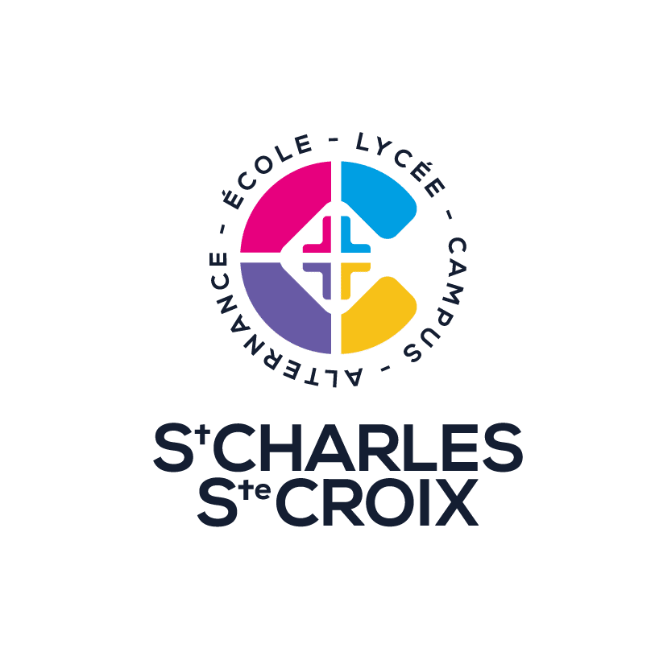
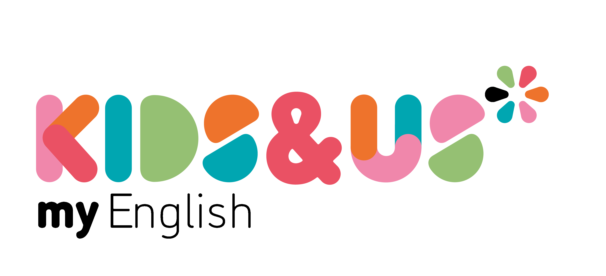
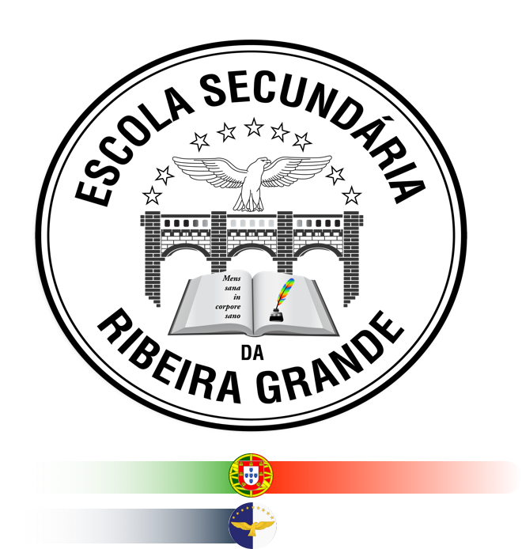

Teaching
English language teaching across different levels, with a focus on communication, inquiry, differentiation and meaningful classroom practice.
Personal Portfolio
English Teacher | Researcher | Educational Innovator
I am an English teacher and researcher based in the Canary Islands, with experience across different educational stages and international contexts. My work focuses on language teaching, international education, CLIL, inquiry-based learning, and the responsible integration of technology and AI in education.

Academic and professional connections



What I do
English language teaching across different levels, with a focus on communication, inquiry, differentiation and meaningful classroom practice.
Academic interest in AI literacy, teacher development, educational innovation and responsible technology integration.
Experience and interest in CLIL/AICLE, inquiry-based learning, international programmes and multilingual education.
Exploration of practical, safe and responsible uses of AI to support teachers, students and school innovation.
Featured areas
Current focus
My current academic and professional work explores AI literacy in education, particularly how teachers understand, evaluate and use AI tools responsibly. I am especially interested in developing practical approaches that help schools move beyond simple tool use and towards critical, ethical and pedagogically meaningful integration.
Latest resources

A reflection on why teachers need to understand AI critically, not only learn how to use tools.
Read more
Ideas for designing English lessons where students discover, test and apply language patterns.
Read more
Practical considerations for teachers and schools when using AI tools with students.
Read more